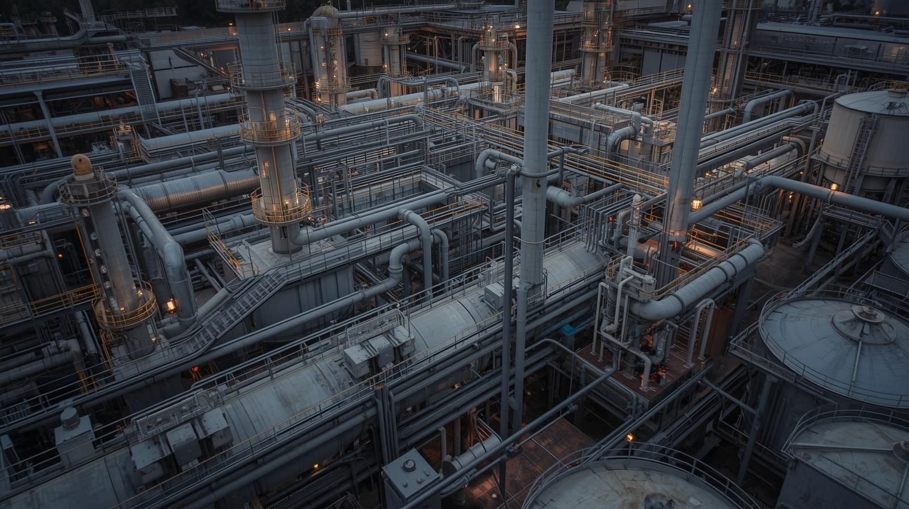

<!DOCTYPE html>
<html lang="cs">
<head>
    <meta charset="UTF-8">
    <meta name="viewport" content="width=device-width, initial-scale=1.0">
    <title>SSCC – Integrovaná energetická infrastruktura</title>

    <link rel="stylesheet" href="assets/style.css?v=3">
    <style>

</head>

<body>
<!-- HLAVIČKA (tmavá, minimalistická) -->
<header class="site-header">
    <div class="header-left">
        
        <div class="site-motto">Zelenou se naše planeta nestane zákazy ale tím, že škodlivé přeměníme na užitečné.</div>
    </div>

    <nav class="main-nav">
        <a href="index.html" class="active">Úvod</a>
        <a href="sscc-system.html">SSCC systém</a>
        <a href="technologie.html">Technologie</a>
        <a href="aplikace.html">Aplikace</a>
        <a href="data-ai.html">Data & AI řízení</a>
    </nav>
</header>


<!-- HERO -->
<section class="hero hero-small" style="background-image:url('assets/img/hero-index.jpg');">
    <div class="overlay"></div>
</section>


<!-- HERO IMAGE SECTION – Obrázek přes celou šířku -->
<section class="hero-image">
    
</section>

<!-- TEXT POD HERO -->
<section class="hero-text section">
    <div class="container">
        <h1>Energie, která se přizpůsobuje. Ne kolísá.</h1>
        <p>
            SSCC integruje obnovitelné zdroje, geotermální teplo a chemické nosiče energie
            do jednoho řídicího celku. Cílem je poskytovat stabilní výkon i v době, 
            kdy výroba z OZE kolísá.
        </p>
    </div>
</section>


<!-- ÚVODNÍ SEKCE -->
<section class="section intro-section">
    <div class="container">
        <h2>Nový typ energetického systému</h2>

        <p>
            SSCC (Smart Synthetic Carbon Cycle) představuje technologickou platformu, která propojuje 
            obnovitelné zdroje, geotermální teplo a chemická úložiště energie v jeden integrovaný celek. 
            Na rozdíl od tradičních systémů, které pouze vyrovnávají výkon, SSCC řídí toky energie i hmoty 
            v reálném čase a vytváří stabilní, predikovatelný a dlouhodobě uložitelný energetický výkon.
        </p>

        <p>
            Kombinace vysokokapacitních chemických médií (NH₃, H₂, CO₂-cyklus), tepelné integrace a 
            datově řízeného provozu umožňuje překonat omezení bateriových úložišť a zajistit výkon 
            v horizontu hodin, dnů i měsíců. SSCC tak tvoří nový základ pro stabilní, nízkoemisní 
            a lokálně řízenou energetiku.
        </p>

        <a href="sscc.html" class="btn-primary">Jak celý systém funguje</a>
    </div>
</section>

<!-- BENEFITY -->
<section class="section benefits-section">
    <div class="container">
        <h2>Co SSCC přináší</h2>

        <p class="section-lead">
            Energetická infrastruktura nové generace musí být stabilní, škálovatelná a technologicky neutrální. 
            SSCC tyto požadavky splňuje díky propojení více zdrojů energie a chemické akumulace.
        </p>

        <div class="benefits-grid">

            <div class="benefit-box">
                <h3>Stabilní výkon bez ohledu na podmínky</h3>
                <p>
                    Kombinace obnovitelných zdrojů, geotermálního tepla a chemických médií eliminuje kolísání výroby. 
                    SSCC poskytuje stálý výkon i během dlouhých období nízké produkce z OZE.
                </p>
            </div>

            <div class="benefit-box">
                <h3>Dlouhodobé ukládání energie</h3>
                <p>
                    Amoniak, vodík a uzavřený CO₂-cyklus umožňují skladovat energii ve škále týdnů až měsíců. 
                    To výrazně přesahuje možnosti bateriových systémů.
                </p>
            </div>

            <div class="benefit-box">
                <h3>Modulární a škálovatelná architektura</h3>
                <p>
                    SSCC lze nasazovat postupně: od jednoho energetického uzlu až po kompletní městské nebo 
                    průmyslové infrastruktury propojené do robustní sítě.
                </p>
            </div>

            <div class="benefit-box">
                <h3>Energetická a surovinová nezávislost</h3>
                <p>
                    Lokální výroba a ukládání energie snižují závislost na dovozech paliv a zvyšují odolnost 
                    regionů vůči cenovým i geopolitickým šokům.
                </p>
            </div>

        </div>
    </div>
</section>

<!-- JAK SSCC FUNGUJE -->
<section class="how-section section">
    <div class="container">
        <h2>Jak SSCC funguje</h2>

        <p class="how-intro">
            SSCC integruje tři hlavní procesní oblasti: energetické vstupy, chemickou přeměnu a ukládání 
            a finální dodávku výkonu. Tyto procesy jsou řízeny datovým modelem, který optimalizuje tok energie 
            i hmoty v reálném čase.
        </p>

        <div class="how-grid">

            <div class="how-item">
                <h3>Krok 1 — Energetické vstupy</h3>
                <p>
                    Základ tvoří kombinace OZE (solární, větrná), geotermálního tepla a recirkulovaného CO₂, 
                    který slouží jako pracovní médium i chemická surovina. Tyto zdroje poskytují energii 
                    pro elektrolýzu, tepelné procesy a syntézu.
                </p>
            </div>

            <div class="how-item">
                <h3>Krok 2 — Přeměna a ukládání energie</h3>
                <p>
                    Přebytky elektřiny jsou využívány k produkci vodíku, následně k syntéze amoniaku a 
                    dalších uhlíkových médií. Chemická akumulace zajišťuje vysokou energetickou hustotu 
                    a dlouhodobou stabilitu.
                </p>
            </div>

            <div class="how-item">
                <h3>Krok 3 — Dodávka výkonu</h3>
                <p>
                    Chemická média se zpětně mění na elektřinu, teplo nebo průmyslové vstupy. 
                    Tím lze doplňovat výkon v obdobích nízké výroby z OZE a stabilizovat 
                    lokální i regionální sítě.
                </p>
            </div>

        </div>

        <a href="sscc.html" class="btn-primary">Detailní popis systému</a>
    </div>
</section>

<!-- PROČ NA TOM ZÁLEŽÍ -->
<section class="section">
    <div class="container">
        <h2>Proč na tom záleží</h2>

        <p class="section-lead">
            Stabilita, nezávislost a nízké emise jsou základním předpokladem pro fungování moderní společnosti. 
            Rostoucí podíl OZE vyžaduje nové nástroje pro řízení výkonu a ukládání energie v dlouhých časových horizontech.
        </p>

        <div class="benefits-grid">

            <div class="benefit-box">
                <h3>Bezpečná a stabilní energetika</h3>
                <p>
                    SSCC eliminuje kolísání obnovitelných zdrojů a poskytuje stabilní výkon díky propojení 
                    chemických médií, tepelné integrace a datového řízení.
                </p>
            </div>

            <div class="benefit-box">
                <h3>Ekonomická předvídatelnost</h3>
                <p>
                    Stabilní cena energie umožňuje dlouhodobé plánování a zvyšuje konkurenceschopnost podniků.
                </p>
            </div>

            <div class="benefit-box">
                <h3>Čistší průmysl</h3>
                <p>
                    Uzavřené uhlíkové cykly, vodík a syntetická média umožňují výrazné snížení emisí v těžkém průmyslu.
                </p>
            </div>

            <div class="benefit-box">
                <h3>Odolnost vůči krizím</h3>
                <p>
                    Schopnost dlouhodobého ukládání energie chrání regiony před dlouhými výpadky výroby, 
                    extrémní zimou nebo nedostatkem surovin.
                </p>
            </div>

        </div>
    </div>
</section>

<!-- CTA -->
<section class="cta-section" style="text-align:center; background:var(--dark-900); color:white; padding:120px 20px;">
    <div class="container">

        <h2 style="color:white;">Chcete vědět, jak může SSCC fungovat ve vašem projektu?</h2>

        <p style="max-width:760px; margin:20px auto 40px; opacity:0.85;">
            Pomůžeme vám navrhnout energetické řešení založené na dlouhodobé akumulaci, geotermii a syntetických médiích.
            SSCC lze přizpůsobit obcím, průmyslu i velkým energetickým celkům.
        </p>

        <a href="kontakt.html" class="btn-primary" style="font-size:18px; padding:16px 34px;">
            Prozkoumat možnosti spolupráce
        </a>

    </div>
</section>

</body>
</html>
